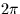
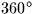

Convert an angle in radians to degrees, arcminutes,
arcseconds (single precision).
CALL:
CALL sla_CR2AF (NDP, ANGLE, SIGN, IDMSF)
GIVEN:
NDP
I
number of decimal places of arcseconds
ANGLE
R
angle in radians
RETURNED:
SIGN
C
`+' or `-'
IDMSF
I(4)
degrees, arcminutes, arcseconds, fraction
NOTES:
1.
NDP less than zero is interpreted as zero.
2.
The largest useful value for NDP is determined by the size of
ANGLE, the format of REAL floating-point numbers on the target
machine, and the risk of overflowing IDMSF(4). For example,
on a VAX computer, for ANGLE up to , the available floating-point
precision corresponds roughly to NDP=3. This is well below
the ultimate limit of NDP=9 set by the capacity of the 32-bit
integer IHMSF(4).
3.
The absolute value of ANGLE may exceed . In cases where it
does not, it is up to the caller to test for and handle the
case where ANGLE is very nearly and rounds up to , by testing for IDMSF(1)=360 and setting IDMSF(1-4) to zero.